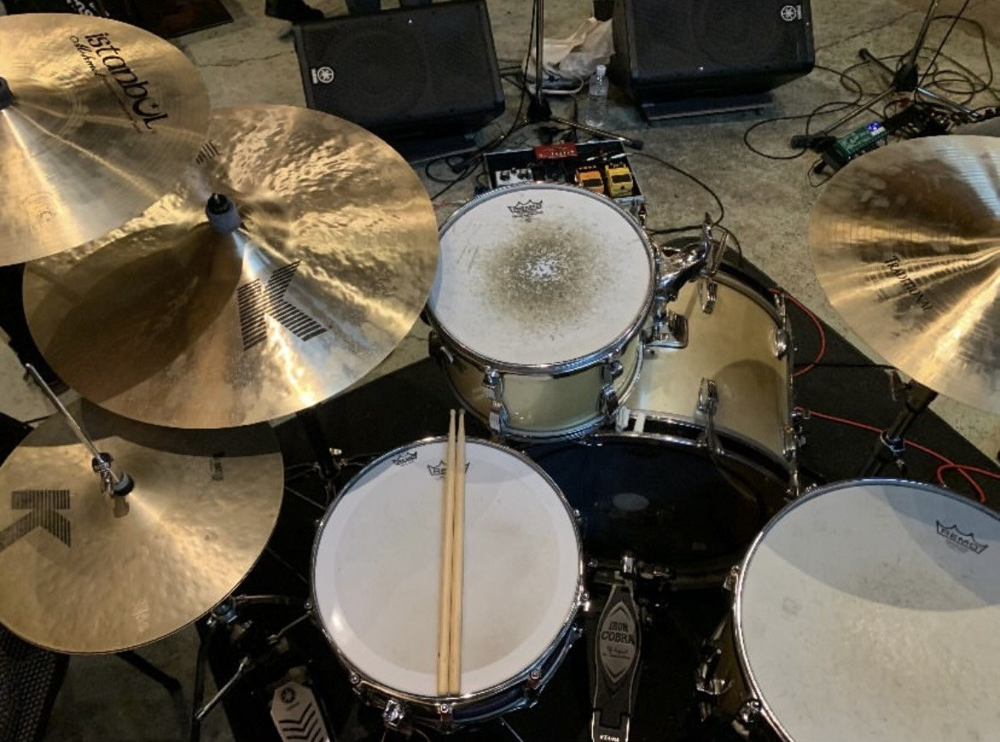
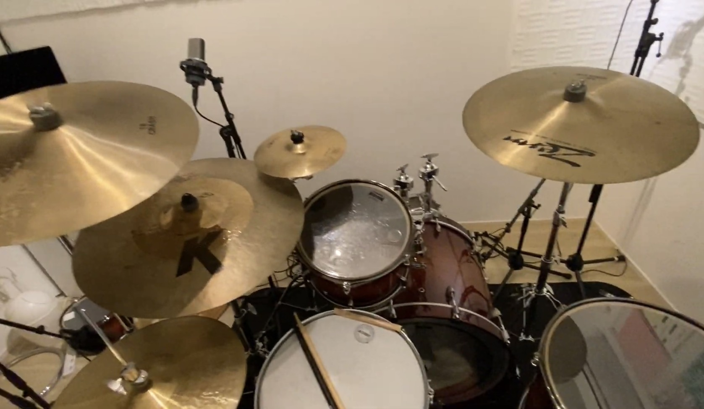

|
目次へ戻る ｜ トップへ戻る
週刊東山通信 第8回
ドラムセッティングに個性を求めて
投稿日：2026年4月2日 ｜ 執筆：せる
ドラムセットの各楽器の位置決めである｢セッティング｣はドラマーであれば誰しも通る道であり、その人それぞれの個性がいちばん出る部分と言っても過言ではないだろう。
そんなわけで今回は、私のドラムセッティングを語らせていただきたい。
まずは見てもらったほうが早いだろう。これが私のいつものセッティングである。

せるセッティング
ここで既に勘のいいドラマーは気付いているはずだ。
｢ライドの位置おかしくね？｣と。
ご明察。
何を隠そう、私はオープンハンドなのである。
ドラマーは基本的に、右手をハイハット、左手をスネアの位置に構えることが多く、その位置関係から2本の腕が交差するのが一般的である。だいたいドラマーの95%ぐらいはこのクロスハンドのスタイルだと思われる。
しかし私は残り5%の方に入る異端児なのだ。異端児はどうしているのかというと、左手でハイハット、右手でスネアを叩いている。いわゆる左利き、レフティーだからである(私の場合箸やペンは右利きなのでややこしいが)。
この方式を採ると、交差せずそのままハイハットやスネアの位置に腕がのびる。これが一般的なクロスハンドに対して、｢オープンハンド｣と呼ばれるドラムスタイルである。
ドラムは基本的にハイハットを叩く腕でライドを叩くことが多いため、左手でハイハットを叩く我々は左側にライドを持ってきた方が都合が良い。なのでこのようなセッティングを採用するわけだ。
なんだかイカした名前で呼んだりしているので、さもオープンハンドの方が良いかのように錯覚する人もいるかもしれないが、実際は全くもって逆である。
セッティングに人一倍時間がかかるわ、コピバンなんてやろうもんならフィルインの手順が真逆だわで、メリットなんてひとつもないのである。
クロスハンド(右利き)では叩けないのか？と聞かれると、そうでもない。実は吹奏楽部時代、ドラム以外の楽器を叩くときは右手始まりで叩いていたし、クロスハンドのドラムもやろうと思えば、簡単なフレーズであれば叩けもする。
じゃあなぜそんな面倒なスタイルを採っているのか。恥ずかしがらずにいうと、面倒だと思っている一方で、恐らく心の奥深くで、オープンハンドの方が個性があって良いだろ、って思っちゃってる部分がちょっとあると思う。
だって他のみんなと違ってライド左にある方がカッコイイじゃん！ハイハットめっちゃ低くするのカッコイイじゃん！！せっかくドラム左利きなんだからやらせてよ！！と。
実際、時間かかるとか色々デメリットがあってはじめは引け目のように感じていたが、今では自分のこのスタイルを個性だと認めて、愛せている。
加えて、これは私がオープンハンドにこだわる最大の理由だと思うが、こちらをご覧いただきたい。

刄田綴色セッティング
これは私が敬愛する東京事変のドラマー、刄田綴色のセッティングである。私のものと非常に似ていると分かるだろう。そう、私は大好きな刄田綴色のセッティングを真似するところからオープンハンドに入ったのである。
だって好きなんだもん。カッコイイじゃん。真似して何が悪いんだ。ちなみにスネアも彼のシグネチャーモデルだ。
恐らく私はいわゆる｢クロスドミナンス｣みたいな名前の、行う動作によって利き手が変わるやつなのだ。野球のボールは左投げ、バットは右打ち、日常で咄嗟に出る手は左、箸やペンは右。
たまたまドラムが左利きで、たまたま好きなドラマーも左利きだっただけなのだ。言い訳みたく聞こえるが、本当に最初にドラムに触れたとき、オープンハンドの方が叩きやすかったのだ。もはやこれは私と刄田綴色とを繋ぐ運命と言っても過言ではないのだ(？)。
まぁここまでオープンハンドの話で大分長くなってしまったので、他の部分にも少しだけ触れておこう。
私はセット全体的に低めに設定するのが好みである。椅子もほぼ一番下まで下げるし、それに伴ってスネア、フロアタム、ハイハット、シンバル等全てを低くする(これもセッティングに時間がかかる要因ではある)。
なぜ低くするのかと言うと、脚に体重が乗りやすく、バスドラムの音量が出やすいからである。加えて体が安定するので、脚以外にも音量やリズムを一定に保ちやすい。
あと、タムはワンタム派(2つあってもあまり叩き分けられないから)で、地面と平行めにする。これは叩きやすさとかではなくて、個人的にカッコイイと思ってるだけ。むしろ叩きにくいし、リムに当たってしまって上手く叩けないこともある。ただの意地である。
というわけで、私のドラムセッティング紹介は以上である。ドラマーの中には共感してくれる人や、私と違った視点、意見をもつ人もいると思うので、コメントや直接お会いした際にでも、他の人のセッティングの話をぜひ聞いてみたい。お願いします。
今度は所持機材の話でもしようかしら。
せる
目次へ戻る ｜ トップへ戻る
|
💬 コメント
コメントを投稿する
※お名前は自由に設定できます。コメントはちいかわ風に変換されます。